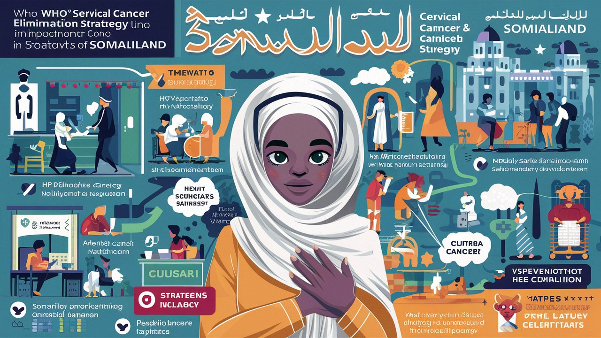

2024 TMM Project

Progress Report (2024/05/27)
Progress Report (2024/06/12)
Progress Report (2024/06/28)
Progress Report (2024/07/10)
Progress Report (2024/08/07)
TMM Projects 進度(四大項)
*公共衛生
1. 2024年登革熱追蹤管理暨加護病房重症支援
計劃概述
本計劃旨在支援索馬利蘭的登革熱防治工作，重點包括強化疾病監測系統、提升重症管理能力，並協助建立完善的資料收集和分析機制。鑑於目前疫情升溫，我們將優先建立HGH lab的RDT-confirmed dengue cases surveillance system，作為eIDSR的第一階段，以快速掌握疫情動態並有效利用資源。
主要內容更新 (2024/08/07)
- 登革熱疫情監控（IDSR and eIDSR）
- 協助MoHD實施整合性疾病監測與應對（IDSR）系統
- 優先在HGH lab建立RDT-confirmed dengue cases surveillance system，作為eIDSR第一階段
- 後續支援eIDSR在4家公立醫院的整合：Hargeisa、Boroma、Berbera和Burco (ICDF HIS)
- 推動mHealth於區域醫院、衛生中心和社區的應用
- 確保臺灣供應的RDT能透過新建立的stage I eIDSR系統有效追蹤使用情況
- 加護病房重症支援
- 提供動脈血液氣體分析試劑，用於加護病房重症患者
- 協助引進高品質登革熱NS1快速診斷測試（RDT），避免價廉品質不佳的產品
- 支援HGH實驗室進行IgM/IgG抗體ELISA檢測
- 由李枝新主任主導呼吸器和呼吸照護ICU重症培訓計劃
- 強化severe dengue的診斷及照護能力，以減少重症死亡比率
- Dengue fever流行病學概況（破碎不完整的資訊，突顯建立統一監測系統的重要性）
- 2023年10月-12月：2,635例病例（734例陽性，陽性率27.9%）
- 2023年9月-2024年1月：6,394例疑似病例(WHO)
- 2022年10月-2024年6月：HGH報告2,871例病例(沒有實驗室data)
- WHO提供20,000個RDT，HGH實驗室分配到1,512個（陽性率25.9%）
Action Points(who/when)
- eIDSR系統整合 (MoHD Public Health / 2024年10月前)
- 優先在HGH lab建立RDT-confirmed dengue cases surveillance system
- 規劃DHIS2與ICDF HIS在4家公立醫院的整合
- KPI：HGH lab系統建立完成度，即時數據dashboard功能正常運作
- mHealth技術推廣 (TMM / 2024年12月前)
- 在區域醫院、衛生中心和社區推廣DHIS2 tracker module app收集和報告技術
- KPI：至少20%的public sectors in Hargeisa採用mHealth技術進行數據報告
- 登革熱RDT品質管制 (HGH實驗室主任 / 2024年9月起)
- 建立RDT質量控制機制，解決false negative問題
- 確保臺灣供應RDT的有效使用和追蹤
- KPI：降低偽陰性率至5%以下，RDT使用率達90%以上
- 加護病房能力建設 (李枝新主任 / 2024年9-12月)
- 完成在地呼吸器和呼吸照護培訓計劃
- 強化severe dengue的診斷及照護流程
- KPI：培訓至少10名ICU醫護人員，提高重症severe dengue存活率10%
- 建立data request機制 (TMM + Dr. Hergeye / 2024年9月)
- 與MoHD確立明確的數據共享流程和申請表格
- KPI：建立標準化數據共享協議，縮短dengue case reporting時間至每日通報
計劃概述 (archieved) (2024/08/07)
本計劃旨在支援索馬利蘭的登革熱防治工作，重點包括強化疾病監測系統、提升重症管理能力，並協助建立完善的資料收集和分析機制。
主要內容更新
- 登革熱疫情監控（IDSR and eIDSR）
- 協助MoHD實施整合性疾病監測與應對（IDSR）系統
- 支援eIDSR在4家公立醫院的整合：Hargeisa、Boroma、Berbera和Burco (ICDF HIS)
- 推動mHealth於區域醫院、衛生中心和社區的應用
- 加護病房重症支援
- 提供動脈血液氣體分析試劑，用於加護病房重症患者
- 協助引進登革熱NS1快速診斷測試（RDT）(避免價廉品質不佳的產品)
- 支援HGH實驗室進行IgM/IgG抗體ELISA檢測
- 由李枝新主任主導呼吸器和呼吸照護 ICU重症培訓計劃
- Dengue feverf流行病學概況 破碎不完整的資訊
- 2023年10月-12月：2,635例病例（734例陽性，陽性率27.9%）
- 2023年9月-2024年1月：6,394例疑似病例(WHO)
- 2022年10月-2024年6月：HGH報告2,871例病例(沒有實驗室data)
- WHO提供20,000個RDT，HGH實驗室分配到1,512個（陽性率25.9%）
Action Points(who/when)
- eIDSR系統整合 (MoHD Public Health / 2024年10月前)
- 規劃DHIS2與ICDF HIS在4家公立醫院的整合
- KPI：系統整合完成度，即時數據dashboard功能正常運作
- mHealth技術推廣 (TMM / 2024年12月前)
- 在區域醫院、衛生中心和社區推廣DHIS2 tracker module app收集和報告技術
- KPI：至少20%的public sectors in Hargeisa 採用mHealth技術進行數據報告
- 登革熱RDT品質管制 (HGH實驗室主任 / 2024年9月起)
- 建立RDT質量控制機制，解決false negative問題
- KPI：降低偽陰性率至5%以下
- 加護病房能力建設 (李枝新主任 / 2024年9-12月)
- 完成在地呼吸器和呼吸照護培訓計劃
- KPI：培訓至少10名ICU醫護人員，提高重症severe dengue存活率10%
- 建立 data request 機制 (TMM + Dr. Hergeye / 2024年9月)
- 與MoHD確立明確的數據共享流程和申請表格
- KPI：建立標準化數據共享協議，縮短dengue case reporting 時間至每日通報
醫療外交亮點
- 跨國醫療合作典範
- 技術團、醫療團與索馬利蘭衛生部合作，展現台灣醫療軟實力
- KPI：促成至少3項技術轉移協議，提升索馬利蘭公共衛生能力
- 數位醫療外交
- 推動eIDSR系統整合，展現台灣ICT優勢
- KPI：系統使用率達85%，提高疾病監測效率30%
- 人道援助貢獻
- 通過重症管理能力建設，直接改善當地醫療品質
- KPI：重症登革熱病例死亡率下降10%
- 加護病房重症支援:
- 動脈血液氣體分析試劑,供加護病房重症患者使用; 篩檢 dengue fever NS1 rapid diagnostic test (RDT); HGH laboratory (IgM/IgG antibody ELISA)
- Ventilator and respiratory care in ICU: 李枝新主任主題醫療
- 瓶頸(資訊破碎、不完整):
- MoHD, Director General, Dr. Hergeye, Public Health department 接洽中;
- dengue fever statistics;
- Epidemiological Overview: Case reports and trends
- October-December 2023: 2,635 cases (734 positive, 27.9%) (WHO, Somaliland)
- September 2023-January 2024: 6,394 suspected cases (WHO, Somaliland)
- October 2022-June 2024: 2,871 cases at HGH, Hargeisa
- WHO provision of 20,000 RDTs (December 2023) => HGH laboratory usage: 1,512 tests (25.9% positive rate)
 (image courtesy: https://reliefweb.int/report/somalia/cholera-dengue-diphtheria-disease-outbreak-response-somalia-hc-meeting-15-02-2024)
(image courtesy: https://reliefweb.int/report/somalia/cholera-dengue-diphtheria-disease-outbreak-response-somalia-hc-meeting-15-02-2024)
- Action points(who/when): [2024/07/24]:
- 2023年Somaliland登革熱資料收集:
- 與WHO和MoHD確認2023年完整資料可獲得性 (TMM / 2024/07/31)
- 分析資料獲取困難點，提出解決方案 (TMM / 2024/08/15)
- 2024年疫情準備:
- 制定2024年登革熱應對計劃 NS1 rapid diagnostic test (TMM / 2024/08/31)
- 評估現有資源和準備程度 (TMM / 2024/08/15)
- 建立疫情監測系統改進計劃eIDSR (TMM / 2024/09/15)
- 萬芳醫院支援需求:
- 列出所需技術支援清單 (TMM / 2024/07/31)
- 與萬芳醫院討論遠距諮詢(感染科醫師) (TMWH / 2024/08/15)
- 制定培訓計劃，提升當地醫護人員能力 (TMWH / 2024/09/30)
- 資料分析和報告:
- 分析HGH 2022年10月至2024年6月的2,871例病例資料 (TMM / 2024/08/31)
- 評估WHO提供的20,000 RDTs使用情況，特別是HGH實驗室使用的1,512測試 (TMM / 2024/08/15)
- 製作綜合報告，包括流行病學概況和趨勢分析 (TMM / 2024/09/30)
- 資源管理:
- 評估現有RDTs庫存和未來需求 (TMM / 2024/07/31)
- 制定資源分配策略，確保有效利用有限的RDTs (TMM / 2024/08/15)
[2024/07/10]
- 2023年索馬利蘭 WHO Dengue fever 資料蒐集: (Taiwan Medical Mission)
- 2635 cases of dengue fever were reported in Somaliland October to December 2023 of which 734 were tested positive (27.9%) for dengue by rapid diagnostic test (RDT) kit. The most affected districts are Hargeisa, Boroma and Gebiley. (https://reliefweb.int/report/somalia/who-somalia-health-emergency-programme-update-december-2023)
- 6394 cases of suspected dengue fever were reported in Somaliland September 2023 to January 2024 (5 months period, peak on November 2023; https://reliefweb.int/report/somalia/cholera-dengue-diphtheria-disease-outbreak-response-somalia-hc-meeting-15-02-2024)
- WHO Dr. Deq: 醫療團已於2024/06/18拜會
- 建議與指示:
- WHO and TMM to maintain open communication and collaboration in supporting MoHD’s efforts to control the dengue fever outbreak in Somaliland.
- WHO: the shared data on dengue fever cases from October 2023 and identify potential areas for support in the surveillance system.
- Dr. Deq strongly recommends that TMM focuses on supporting the weakest part of the Ministry of Health and Development (MoHD): the dengue fever surveillance system, from community and regional levels to MoHD.
- Electronic Integrated Disease Surveillance and Response (eIDSR): meeting minutes
- 建議與指示:
- 索馬利蘭衛生部/HGH: (Taiwan Medical Mission / 2024/06/27)
- 2023年疫情資料整理是準備2024年行動的關鍵，包含檢測數據、陽性率、地區分佈。
- 追蹤December 2023年快篩試劑 20,000 test of RDTs的使用：受測者demographic data，快篩試劑分配方式，UNICEF培訓人員(110 health workers)的現狀，參考上述 as national adaptation，以做出2024應變的計劃。
- 經查 HGH laboratory 取得僅 1512 test of dengue NS1 RDT (December 2023 to 27 June 2024): 陽性率 25.9%
- 其他的 18,488 RDTs 分配方式不明(MoHD DG Dr. Hergeye 經當面詢問，答稱不清楚)
- MoHD Dr. Hergeye and Public health department Mr. Mahdi Dahir Bahdoon ( [2024/08/01]會議: https://texchi2.github.io/2024MSC/20240729_MoHD_TMM_agenda_eIDSR.html): eIDSR surveillance
- TMM project 資金利用：若不適合IRS(indoor residual spray)，預算資金可轉向其他更合適的防疫措施 => IDSR
- 2022-2024年(June) HGH 登革熱統計報告:(Taiwan Medical Mission / 2024/06/15)
- 由 HGH NCD director Dr. Ahmed Hersi(紙本登記簿)提供其分析結果[2024/06/13]:
From October 2022 to June 2024, a total of 2,871 patients with dengue fever were registered at HGH (test? unknown). Among these patients, 1,232 (42.9%) were male, and 1,639 (57.1%) were female.
The majority of patients (2,036, 70.9%) received outpatient medical services, while 835 (29.1%) required hospital admission due to the severity of their illness.
The age distribution of the patients was as follows: 1,723 (60.0%) were under 30 years old, 774 (27.0%) were between 31 and 50 years old, and 374 (13.0%) were over 50 years old.
The total number of dengue fever-related deaths was 23, with a higher mortality rate observed among female patients.
- 已進一步向 Dr. Ahmed 索取raw data (since 14 June 2024) 以便進行完整分析陽性率、以及risk category of severe dengue。
- [2024/06/11] HGH 小兒科統計報告:(Dr. Mohamed and Dr. Guuled, and Dr Hamda)(revision by Taiwan Medical Mission / 2024/06/26)
- 2024 May/June 累積的小兒登革熱案例(十八歲以下)，計有
- 139 confirmed cases on May and June (by NS1 in private sector, or IgG/IgM test in HGH)
- 8 severe dengue cases (5.8%): upper/lower GI bleeding, plasma leakage, myocarditis (due to congenital heart disease), encephalitis, diabetic ketoacidosis (in type 1 diabetes)
- 0 mortality (0%)
- HGH dengue fever strategy SOP :(HGH / ongoing)
- 現行 (2022) HGH Dengue fever management guideline
- 索馬利蘭行政區劃分與醫療資源分佈:
- 6 regions in Somaliland。
- Maroodijeeh Region分為2個District。
- Hargeisa為一獨立District,下設8個行政區(Sub-district)。
- 進行Hargeisa行政區域及各層級醫療機構分佈調查:
- Hargeisa District 內各層級(RHC, HC, PHU or MCH)醫療機構家數
- 3 regional hospital (Naaso Hablood Hospital, Gurmad Hospital, and Daryeel Hospital)
- 3 Referral Health center (RHC), 3 Health Center (HC), 45 Primary Health Unit (PHU) non-functional, and 66 Maternal Child Health clinics (MCH)
- 瞭解各行政區可及的醫療資源,作為登革熱防治規劃的參考。
- Somaliland Publications
- 來自本土發表的文章: 醫療團已與作者取得聯繫 Mr. Hussein Mohamoud Nour 2022 Edna Adan University Hospital (EAH) statistics, a research article titled “Sero-prevalence of Dengue virus infection and associated factors among patients with febrile illness attending at Edna Adan University Hospital. Hargeisa, Somaliland, 2022: A cross-sectional study” published in the Journal of Women’s Health Care. (https://www.longdom.org/open-access-pdfs/seroprevalence-of-dengue-virus-infection-and-associated-factors-among-patients-with-febrile-illness-attending-at-edna-ad.pdf)
- [2024/06] dengue NS1 RDTs is only available in few private hospitals
- (尚未回應) 就教於當地專家 Dr Yusuf Mohamed (Infectious disease and tropical medicine) in Hargeisa, he attended 2024MSC as a participant)
*訓練
2. Visiting Scholarships for Training in Taiwan
- Project: Capacity Building for Somaliland Medical Personnel
- Collaborators: Taipei Municipal Wanfang Hospital (TMWH), Taiwan Medical Mission (TMM), and Hargeisa Group Hospital (HGH)
- Initiatives:
- Provide “Visiting Scholar Scholarships” for 12 Somaliland medical personnel to receive training in Taiwan for up to three months
- Conduct selection process jointly by Taiwan Medical Mission and HGH Director’s Office
- Invite selected personnel to participate in TMM’s 2024 public health programs
- Required support:
- TMM: Scholarship funding for 12 medical personnel (one batch)
- Coordination with TMWH for training arrangements
- Collaboration with HGH for personnel selection and public health program participation
- Action points(who/when):
- (謝謝病理科陳主任指導)遠距視訊會議(2024/6/20，瞭解HGH pathology 之 staff 和設備，進一步溝通合作細節)。取得 Dr Omar 電子版的 病理報告，Microsoft Access database 並完成分析，近半年僅有 110 份報告，4/5 都未能存檔；所幸尚有紙本報告留存在 file folder (已經由Dr. Omar手工輸入，轉為 Excel file， 亦已於 2024MSC 研討會中初步 報告): 110 名病例分析 from MS Access database
- 正在安排第一次 telepathology meeting for case discussion (Dr. Omar, since 20 June)
- 正在邀請Dr. Omar 分享上述 Excel data (Dr. Omar, since 20 June)
送訓科別(尚缺培訓計劃書):神經外科、病理科、骨科
送訓科別(已有培訓計劃書):一般外科(2 or 3名主治醫師)、ICU/胸腔內科(待進一步說明 Dr. Jacfar)、開刀房護理師(一名)
建議送訓科別: 心臟內科(例如，心臟內科醫師的培訓需要考慮HGH現有的設備情況，如超音波機器的類型。)
為確保受訓者回國後能實際運用所學技能的重要性。各科的培訓計畫中，須明確訂立每位受訓者回國後的服務目標。
- 一般外科腹腔鏡手術訓練中心 - 由醫療團王彥翔醫師與HGH Afnan醫師及一般外科醫師群(包括十月份將赴臺北的 Dr. Nouh)，合作推行 - 背景:HGH一般外科醫師具豐富開刀經驗,但受限於資源,公立醫院尚無腹腔鏡設備
- 所需設備:萬芳醫院提供腹腔鏡手術器械與訓練模型(home made DIY simulator box)
- Action points(who/when):- 待課程規劃、器械整理後，開始訓練教學 (Taiwan Medical Mission / 2024/07)
- 通過認證者，得遴選為赴臺送訓的種子學員(上限三名)
- 待遴選完成後，辦理健康檢查(Chest X-ray, Tuberculosis (TB) Sputum Test, Syphilis/VDRL, Measles/Rubella)，以利申請 90日之受訓，執行臨床實作) (預計為十月份開始受訓)(Taiwan Medical Mission / 2024/07)
*示範
3. 骨質健康計劃
A. 由萬芳醫院骨科郭宜潔醫師/陳昱斌醫師指導HGH骨科團隊
- 計畫內容:關節鏡膝關節手術
- 所需設備: 膝關節鏡手術器械(ready)
- 目前進度:2023年10月郭醫師親自示範手術技巧,培訓種子醫師;2024年8月骨科專家將再度蒞臨指導進階手術
- 瓶頸: - 醫師學習曲線較長,需反覆練習; - 關節鏡設備維修保養需OT的醫學工程技術員、及開刀房主任（護理師)負責
B. TOM 骨質疏鬆預防保健計畫
- 計畫名稱:「TOM骨質疏鬆」篩檢與預防保健
- 內容:利用股骨X光片,透過AI人工智慧計算T-score/Z-score,評估骨質密度
- 目前進度:已引進Taiwan Osteoporosis Master (TOM)系統,規劃舉辦義診以推廣活動
- 瓶頸:民眾對骨質疏鬆認知不足,由骨科與放射科醫師支援，於院內骨科門診、骨科住院病患衛教宣導做起，並架設系統與網路讓 TOM上線
case control study in hip fracture (retrospective)
先行建立骨質疏鬆檢測系統(TOM: pelvic x-ray 建議拍攝參數 kVp:85, mAs:30, SID:100cm),並完成設備與網路架設(intranet)。
首月執行義診服務，由醫療團補貼放射科股骨X光片及放射科主治醫師的診斷費用。
進行髖部骨折病例對照研究(Hip fracture Case control study),調查分析當地骨質疏鬆盛行現況。
根據研究結果,與骨科團隊討論後續執行方向,擬定符合在地需求的骨鬆防治策略。
Action points(who/when): TMM / 2024/08
*公共衛生
4. 三項癌症防治計畫(子宮頸癌、乳癌、肝癌)
A. 子宮頸癌防治中心、乳癌
由HGH Fatima醫師、台灣醫療團王彥翔醫師(一般外科)、黃郁昕醫師(婦產科團員)共同推動
子宮頸癌篩檢:引進HPV DNA real-time PCR檢測、Pap smear抹片染色與細胞病理訓練課程
子宮頸癌預防:引進HPV vaccine
乳癌篩檢:乳房超音波檢查
瓶頸:
- cancer registry and cancer statistics:
- Somalia tertiary hospital report: (2017-2020, n=1306; 13.1% breast cancer, 13.3% cervical cancer), https://www.ncbi.nlm.nih.gov/pmc/articles/PMC7534047/
- 2023/03/10 WHO ICO/IARC report for Somalia Statistics of HPV-related cancers, crude incident rate of cervical cancer 13.2 per 100,000 population, ranked 2nd (https://hpvcentre.net/statistics/reports/SOM_FS.pdf); IARC: International Agency for Research on Cancer. ICO: Catalan Institute of Oncology
- Carroll et al., 2007: barrier for screening (https://pubmed.ncbi.nlm.nih.gov/17454183)
- Ghebre RG et al., 2015 (https://www.ncbi.nlm.nih.gov/pmc/articles/PMC4312274/)
- Cervical cancer in Somaliland (literature review): https://texchi2.github.io/2024MSC/2024Project_HPV.html
- 2022 report by Needle hospital in Hargeisa: Gebrekirstos Hagos et al., 2023 (https://ecancer.org/en/journal/article/1642-cancer-care-in-needle-hospital-hargeisa-somaliland)
- 病理科 Dr. Omar (report 2 cases in 2023)請求支援，病理切片遠距會議; Dr. Omar and Mr. Mustafe (technician) 亦在2024 送訓名單中 (visiting scholars)
- WHO’s suggested HPV疫苗需要尋求來源GAVI (Hargeisa primary school girls aged 9-14: 50,000 persons; 資料來源 2023 statistics from Ministry of Education and Science, MoES);
- 民眾健康觀念需宣導，並必須與 sexual transmission 切割明確，以免因民情保守，讓 推行受到阻礙
- cancer registry and cancer statistics:
Current Information
- reviewed articles
- Carroll et al., 2007: barrier for screening (https://pubmed.ncbi.nlm.nih.gov/17454183)
- Ghebre RG et al., 2015 (https://www.ncbi.nlm.nih.gov/pmc/articles/PMC4312274/)
- Cervical cancer in Somaliland (literature review): https://texchi2.github.io/2024MSC/2024Project_HPV.html
- 分享HPV center相關文獻,作為推動子宮頸癌防治的參考(https://hpvcentre.net/statistics/reports/SOM_FS.pdf)
- 調查HGH病理報告現況:
- 了解組織切片檢查(biopsy)後,病理報告的完整性。
- 調查是否有出具報告、判讀結果、或報告遺失等情形。
- 建議先由萬芳醫院陳主任，與Dr. Omar 建立遠距病理討論(tele-pathology)，建立合作關係與互信
- 評估是否可完整收集既有病理報告,以利後續分析。
- 建議由駐地護理師協助整理及彙整相關資料。
- 安排與索馬利蘭駐地病理科視訊會議(tele-pathology conference):
- 邀請臺北病理科陳威宇主任,與索馬利蘭駐地團隊進行視訊討論。
- HGH 病理科現有 digital slide scanner。
- HGH 病理科僅有 H&E and cytology stain (Pap stain)服務，無IHC staining。
- 就子宮頸癌防治、病理診斷等議題交換意見,提供專業建議。
- Dr. Omar與病理技術員 Mr. Mustafe亦在2024送訓臺北的學員名單中。
- 調查索馬利蘭HGH病理專科醫師Dr. Omar到任後(2023/02),病理檢體概況:
- 統計Dr. Omar到任後,病理切片的數量、檢體種類、部位、類型等資訊。
- 瞭解目前HGH病理科的檢驗量能與診斷需求。
- 彙整調查結果,與臺北病理科陳主任討論,研擬合作策略。
- Dr. Shih-Han Hung 萬芳醫院ENT洪主任，自2023/08 到訪之後，與Dr. Omar 持續連絡，或許已有相關的統計成果，與發表文章。建議請副院長詢問一下。
- 子宮頸癌防治計畫推動方式:
- Pap smear/Pap stain (ready)
- HPV DNA
- HPV vaccine
- 建議由OBGYN director Dr. Fatima醫師主動啟動,透過宣導及篩檢提高覆蓋率。
- 駐地護理師協助資料整理、追蹤及衛教等工作。
- 醫療團持續提供技術指導及所需資源(reagents),確保計畫順利進行。
- 子宮頸採檢、基因與細胞抹片檢查:
- HPV DNA test (HGH院內檢驗科，現有Qiagen Rotor-Gene Q real-time PCR 儀器): 須要另外採購 HPV DNA PCR reagents。
- 由HGH病理科Dr. Omar負責判讀子宮頸抹片 Pap stain and cytology。
- 萬芳醫院病理科提供相關教學及技術支援。
- 定期盤點染色試劑存量,適時提出申請,避免斷貨。並持續培訓病理染色及判讀人員。
- 萬芳醫院定期監督品質,確保判讀結果的可靠性。
- Action Points(who/when):
分拆子宮頸癌和乳癌預防及早期診斷計畫 (Dr. Huang / 2024/07/13)
提升婦女健康，促進性別平等:
- 設計社區健康工作者（Community Health Workers）和志工（Volunteers）培訓計畫 (RN Penny / 2024/08/15)
- 製作 Reproductive Cancer 健康教育材料 (RN Penny / 2024/08/31)
- 與 WHO 討論 HPV 檢測流程 (Dr. Huang / 2024/08/15)
- 設計完整的病患轉診流程 (Dr. Wang / 2024/08/31)
- 與私立醫院討論 mammography 和 chemotherapy 服務合作 (Dr. Huang / 2024/09/15)
- 建立 IDEM 資料庫計畫 (TMM / 2024/09/30)
確保計畫持續性:
- 在Dr. Huang 離開前可以做哪些; 離開之後誰可以做什麼 (2024/11)
- 與萬芳醫院婦產科及家醫科討論主題醫療支援可能性 (Dr. Huang / 2024/07/11)
- 試擬定當地計劃經理人聘用計畫 (Dr. Huang / 2024/08/15)
- 設計當地病理科醫師培訓計畫 (TMWH / 2024/07/31)
預算和設備:
- 修改預算，分別列出子宮頸癌和乳癌項目 (Dr. Huang / 2024/07/12)
- 加快必要設備採購流程，包括 HPV DNA kits (TMWH / 2024/08/01)
- 完成 2024 年 Phase 1 預算 (Dr. Huang / 2024/08/31)
- 編製 2025 年 Phase 2 計劃與預算書 (Dr. Huang / 2024/11/20)
研究和報告:
- 制定研究計畫，準備SCI國際期刊發表 (Dr. Huang / 2024/10/31)
- 完成 2024 年期中報告 (Dr. Huang / 2024/11/20)